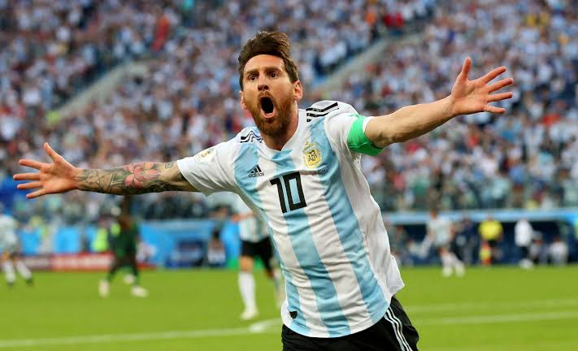
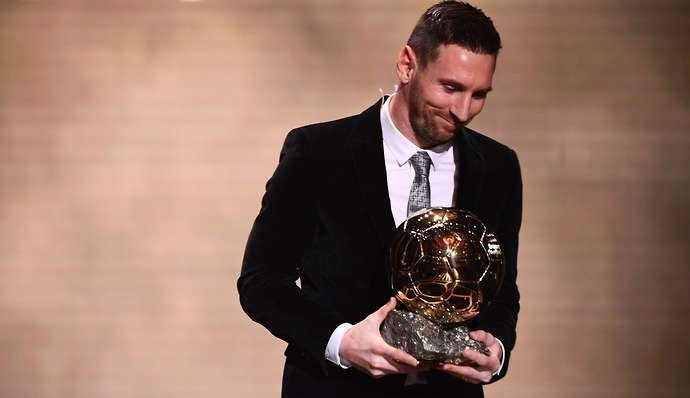

As of August 2019, Messi's all-time highlights for FC Barcelona:
•Appearances: 687
•Goals: 603
•Assists: 251
•Shot accuracy: 48 percent
•Chances created: 348
Messi has won FIFA's Player of the Year six times. He's also won the European Golden Shoe for top scorer six times, two more than his nearest rival, Cristiano Ronaldo.

Best messi moments
•4 Goal against arsenal (champions league quater final 2010)
•solo goal againg Real Madrid back in 2011 (champions league semi-final)
•Performance against Man U in champions legaue final 2011
•Free kick against atletico madrid in 2012.
• 5 goals against Byern Leverkusen.

•91 goal in a single calander
•6 ballon d or
•Player with highest goal for a single club.
•Most hat-triks in Laliga
•Most goals in Laliga
•Most assists in La liga
And many more and Many more to be added in the list!!!